COLUMBIA UNIVERSITY 1968
Columbia University 1966-2011
fdc@columbia.edu
April 1998
Search Columbia University 1968
The buttons above (and others) were on display in Columbia's Rare Book and Manuscript Library on the 6th floor of Butler Library, Chang Room, March 17 - June 6, 2008, in an exhibition commemorating the 40th anniversity of the 1968 uprising. In July 2011, I donated them to their permanent collection. Click the buttons to see more.
Personal recollections of the 1968 student uprising at Columbia University. I was an active participant, but not a member of any particular faction (the only organization I belonged to was Veterans Against the War). I wrote this article for publication in the "Columbia Librarian" at the request of Columbia's Vice President for Information Services and University Librarian, Elaine Sloan (then my boss's boss), on the 30th anniversary of the student rebellion. In 1968 I was an Army veteran working my way through a Columbia degree with a "part-time" student job in the library; when I first wrote this in 1998 I worked in Academic Information Systems (the academic half of what used to be called the Computer Center), which, after 1986, was part of the University Library; hence the library connection. Because this article was written for a Columbia audience, familiarity with the Columbia campus and setting are assumed. The article was placed on the Web and slightly updated in February 2001, with periodic updates after that. Pictures were added in June 2001, which could be viewed by following the links. May 31, 2011: This page and its sub-pages and images were moved from http://www.columbia.edu/acis/history/ to http://www.columbia.edu/cu/computinghistory/. On July 1, 2011, I was laid off after 45 years at Columbia. April 16, 2018: This page converted to HTML5 and validated, all links verified, and all pages made "fluid", e.g. to fit on cell phone screens. August 2019: Extensive revisions, new galleries, and inline images.

Me in the Army
Prelude

|
| 1967 Anti military recruiting demo |

|
| 1968 antiwar demonstration on Low Plaza |
| 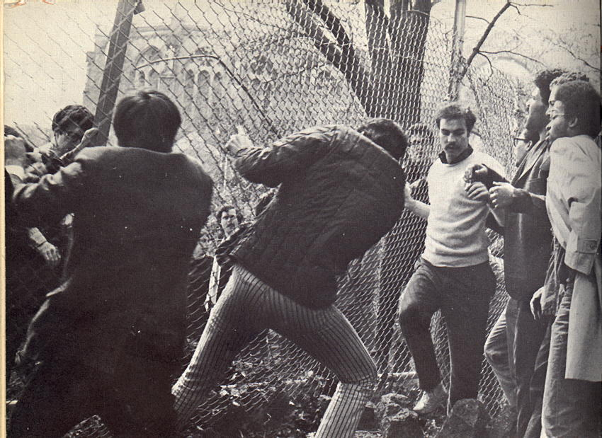 |
| Morningside Park gym site April 23 |
{kind=link}
The First Building Occupations

|
| Hamilton lobby April 23 |
| 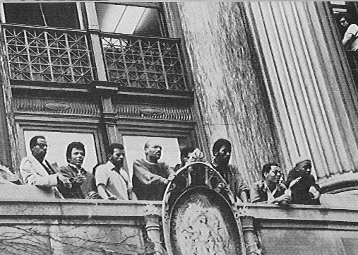 |
| Black students in Hamilton Hall |

|
| Carmichael and Brown |
| 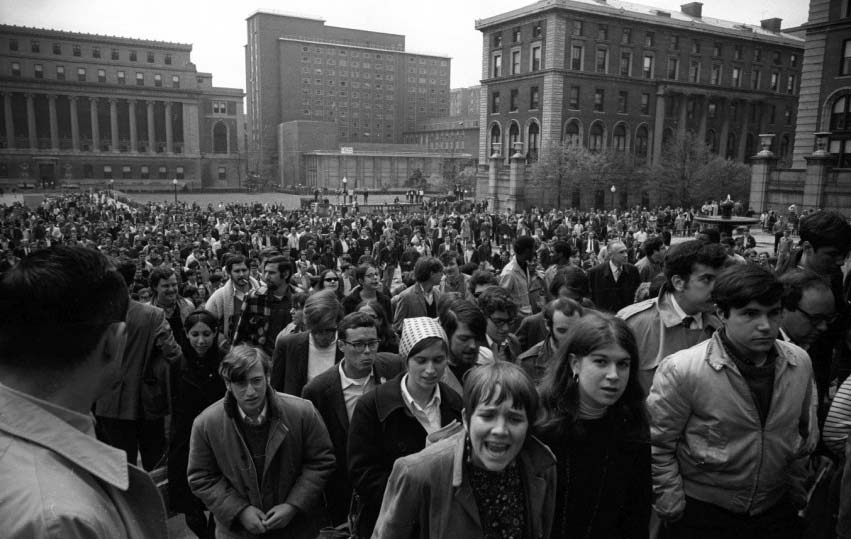 |
| The march from Hamilton to Low |
| 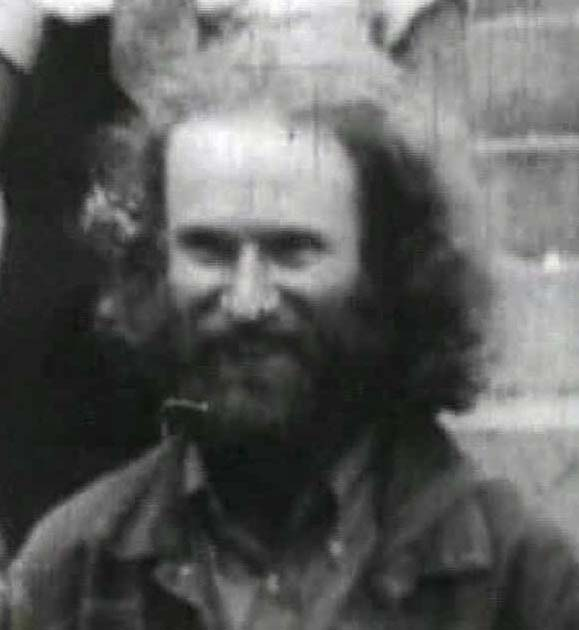 |
| Melvin Morgulis |

|
| Red flag over Math |
| 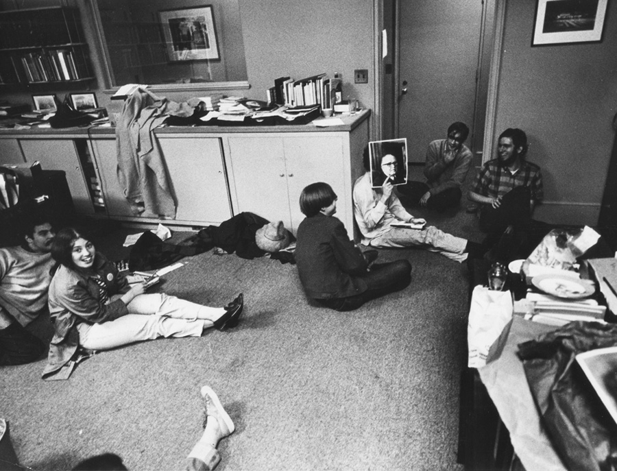 |
| White students in Low |

|
| Me in Low Library (far right) |
| 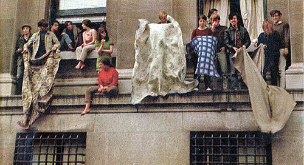 |
| Shaking out blankets |
| 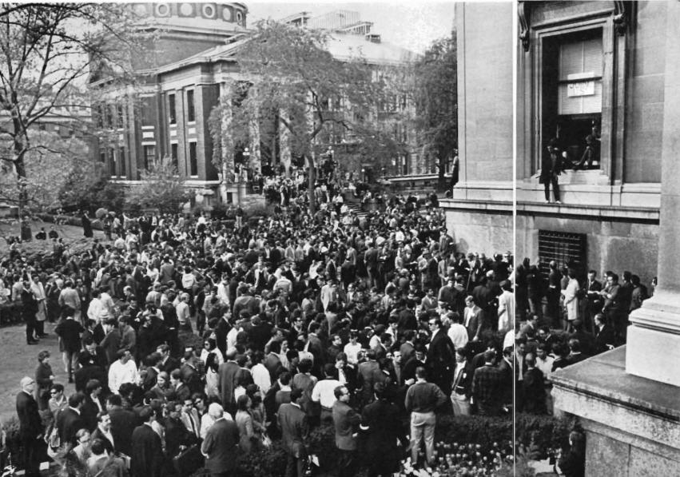 |
| The scene outside Low Library |
. . . In June 2001 I had a call from Jerry Kisslinger of Columbia's Office of University Development and Alumni Relations, who recognized the waist-length hair and powerful arm of John Taylor, son of Nürnberg prosecutor and Columbia Law Professor Telford Taylor (who declined to lend his name to a statement signed by most other Law School faculty, which said the student protests exceeded the "allowable limits" of civil disobedience [New York Times, 24 May 1998]). Thanks to both John and his dad!
| 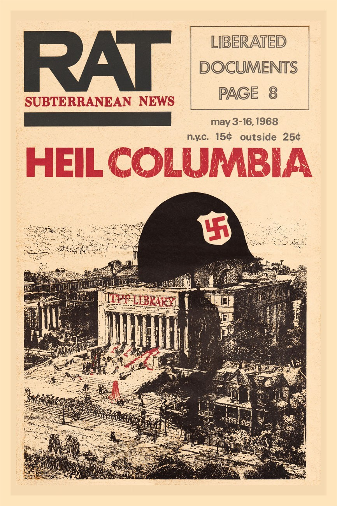 |
The First Bust

|
| Low Library Window |

|
| Head wound |
Soon axes were crashing through the door, the barricade was breached, and the Tactical Police Force (TPF) piled in, first prying apart the singing clump of us, then forming a gauntlet to pass our limp bodies down the corridors, whacking our heads with big metal flashlights along the way, and dragging us by our feet down the marble steps so our heads bounced. Head wounds bleed a lot and journalists got some striking photos of us on our way to the paddy wagons waiting on College Walk.
| 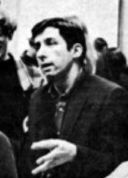 |
| Tom Hayden |
| 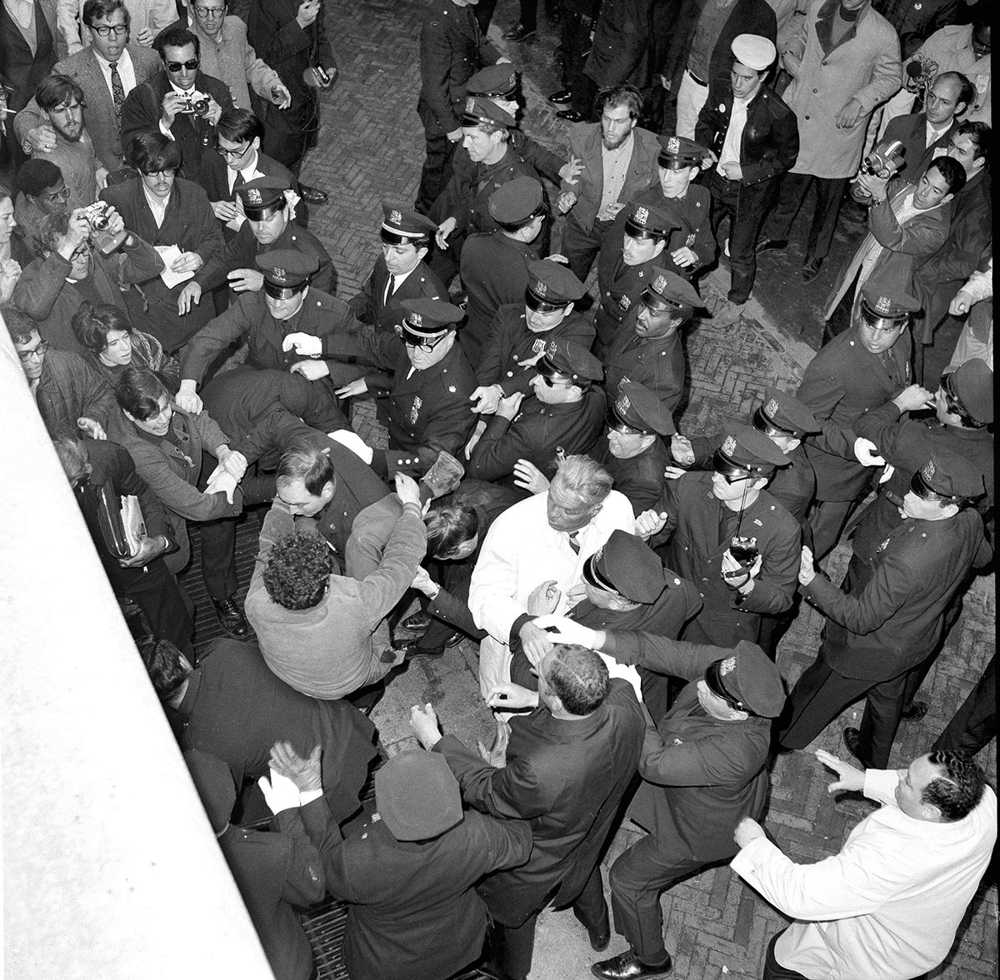 |
| Melee at Math building |
In December 2001 I received the following email from Thomas Gucciardi: "My dad, Frank Gucciardi, was a cop during the riots. He was paralyzed from the waist down for 3 years. (A student jumped off a building into the crowd) He has had a miraculous recovery & still enjoys a fairly active life. I just found your site & commend you on it. My dad till this day loved his job & he does understand the students uprising. He holds no grudges at all for what the students did to him at 34 years of age & having 3 children. Thank you for your website." Later Thomas sent copies of newspaper clippings that told how Patrolman Gucciardi had been injured and of the operations on his spine over the next several years. A series of articles by columnist Martin Gershen in the NY Times, the Long Island Press, and other papers, followed his progress and gained national attention. Also injured was Officer Bernard Wease.
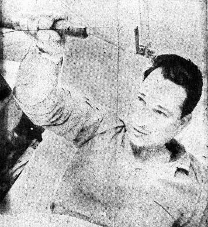 Frank Gucciardi While an article in the LA Times, 9 September 1969, quotes Mayor Lindsay as acknowledging that some police used "excessive force" and states that "news reports quoted witnesses as having seen nonuniformed policemen punching and kicking both male and female students... one blond girl was said to have been beaten unconscious on the sidewalk in front of Avery Hall... a boy left writhing in front of Ferris Booth Hall with his nose smashed...", the only two injuries serious enough to require prolonged hospitalization were to Officers Gucciardi and Wease.
| 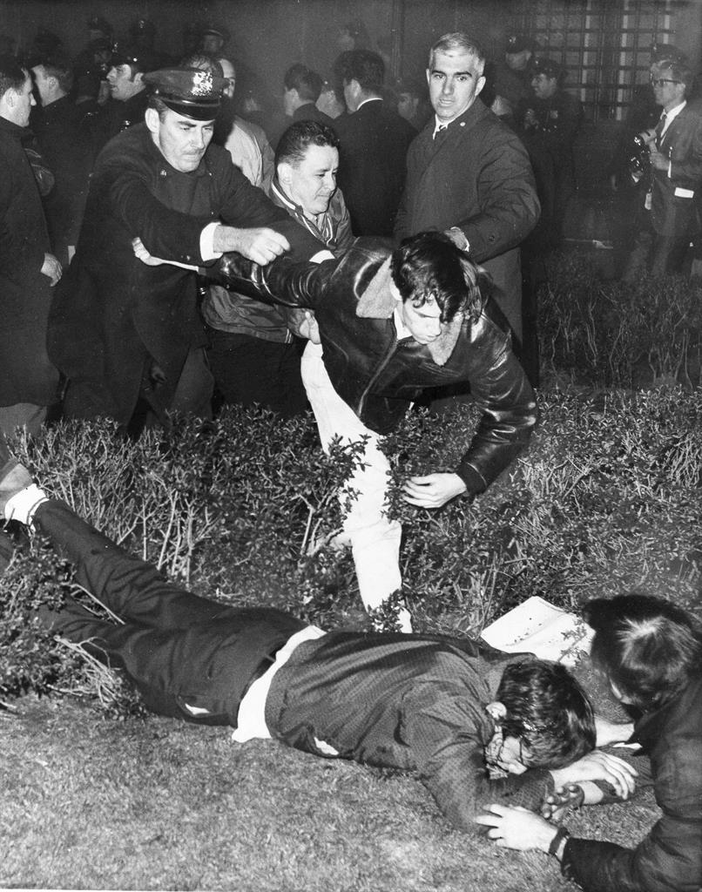 |
| Police riot on campus |
I made sure that I put on a coat and tie – it was about 1 a.m. and I had been alerted by a colleague at Hunter who had heard the bust was imminent. I then joined the cop assigned to the gate who was entirely sympathetic to the students and we watched with horror as the cops beat up kids that had come out of their dorms to find out what all the ruckus was about (Those occupying buildings had been taken out through the tunnels earlier.). I will never forget one small sized student being chased by a group of cops with clubs intent on beating him up – he finally took refuge on top of a car where he tried to avoid their swings. They finally knocked him off and pounced with their clubs. The next day many faculty and students were treated for head and other injuries – all of them innocent of any connection with the actual building occupations. Incidentally at the Cox hearings I heard the dean [Henry Coleman] who had supposedly been imprisoned by the students in Hamilton admit in response to a question by Anthony Amsterdam that he had in fact been ordered by the President to remain in his office and had been treated with entire courtesy by the students throughout and could have unlocked his office door (and relocked it to protect student records) and left at any time. This was given as the excuse for the police action and Sidney Hook refused to take it out of his book account (I got his galleys to pre-view) although I personally drew his attention to his mis-reporting there. Hook had become very right wing by then.
Meanwhile, back in jail... Escorting a group of incoming wounded was a fellow worker of mine from Butler Library, now wearing a badge. In Butler, posing as a student library assistant, he had been trying to recruit us to "blow stuff up", an episode that served well for many years in discussions of leftist paranoia. The librarians, to their credit, were shocked to learn they had hired an agent provocateur and fired him immediately. In those days, librarians also refused to turn over circulation records to the FBI, amazing but true.

|
| Low vandalism... we didn't do it! |
| * | I can't find this in the NYT archive, but I remember it clearly. In those days, daily newspapers came out in several editions per day, and I suspect the Times only archived one edition for each day. |
The Strike
| 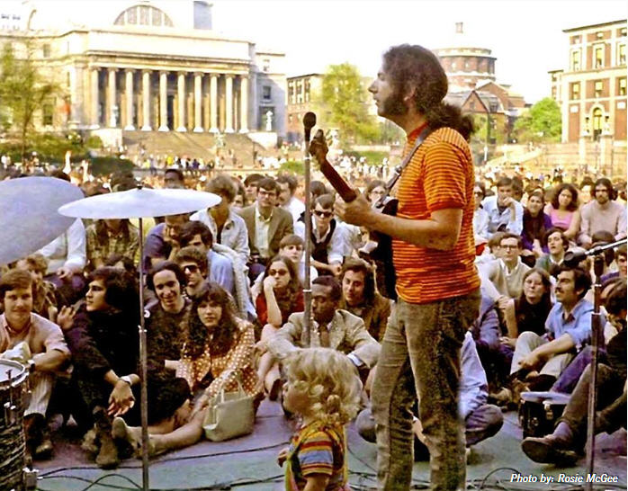 |
| The Grateful Dead |
| 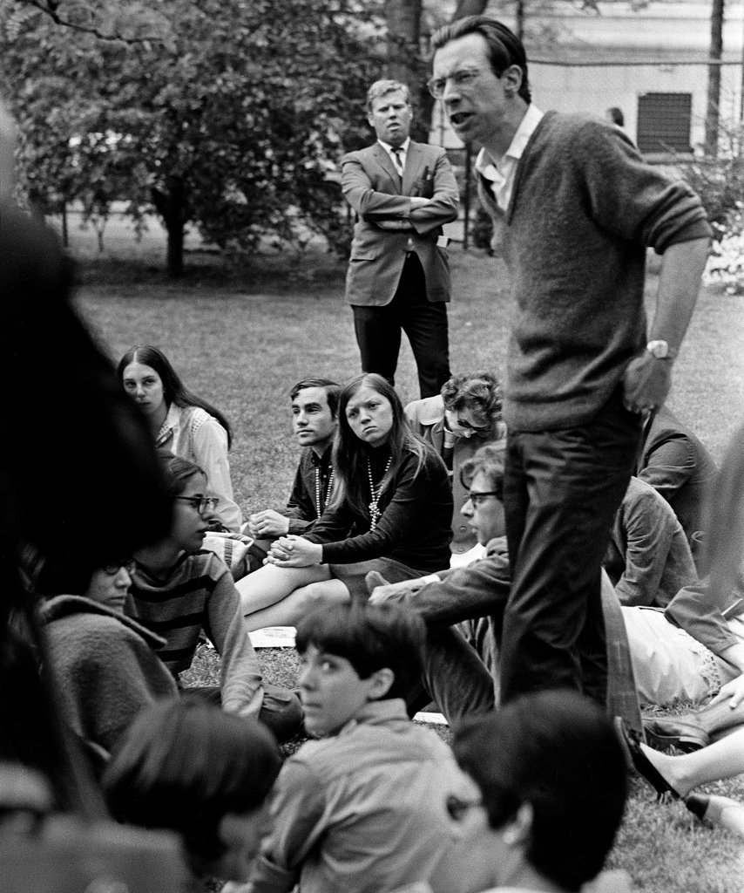 |
| Liberation class |
| 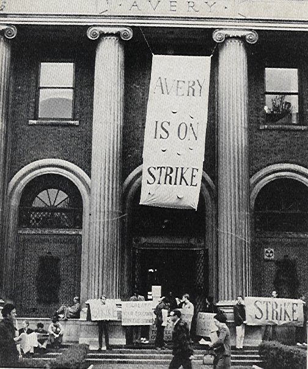 |
| Picket line |
The Second Bust
| 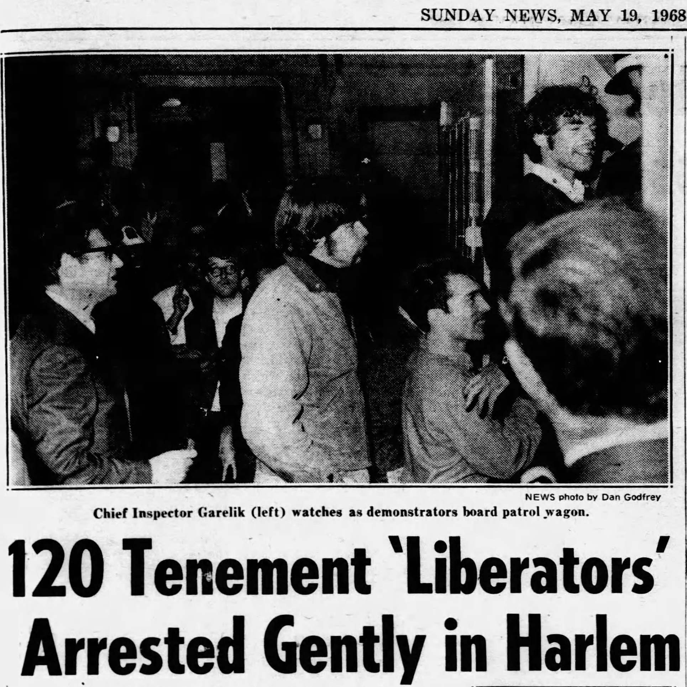 |
| SRO arrests |

|
| SRO occupation |
The May arrests at the Columbia owned building at 618 West 114 Street does not mention that only 113 of the 117 people arrested were actually in 618. Four of us were in the lobby of 622 W 114, not owned by Columbia. Two lived in 622, Mai Ling Rogoff (a pre med student at Columbia), and myself, a 1960 Columbia alumnus. The other two were Mai Ling's boy friend (name long forgotten by me), and a classmate of mine, Jay Russek.Sam Melville was killed in the assault on Attica in 1971.A police sergeant (Last name Healy) opened the lobby door during the police invasion of 618 and screamed "Stay inside." Stupid me replied "We are inside." I saw his face flush and he grabbed Mai Ling and Jay, who were in front of me, pushed them out the door, and grabbed me. At some point the boy friend went also.
We were all charged with trespassing in 618. In court some CU creep testified yes, CU owns 618, and no, CU did not authorize our presence there. As he let the witness stand he had to walk by me, and I said in a low tone "Filthy liar." No one but my fellow criminal, Sam Melville, and the creep heard me, so when he screamed "What! What did you say?" his reaction seemed totally unmotivated. The judge stared, and the assistant D.A. rushed over and tried to calm him down, finally escorting him from the room. Melville kept a poker face, but nudged me.
The Third Bust

|
| Hamilton II |

|
| Flaming Barricades |
Commencement and Beyond

|
| Going to the picnic |
| 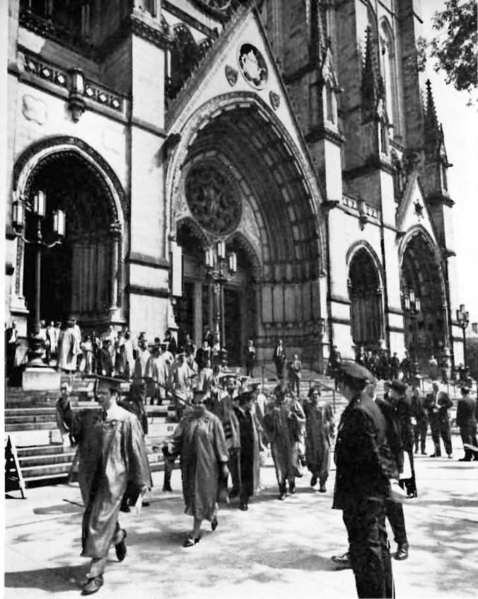 |
| Walking out |
At Columbia, classified war research was halted, the gym was canceled, ROTC left campus, military and CIA recruiting stopped, and (not that anybody asked for it) the University Senate was established. Robert Kennedy, the antiwar presidential candidate, was killed in June 1968, and later that month the French uprising was "voted away" in a national referendum. Mexican students and supporters and bystanders were slaughtered wholesale in October, in La Noche de Tlatelolco. Columbia antiwar rallies continued, and large Columbia contingents chartered buses for the huge demonstrations in Washington, of which there were to be far too many – the war dragged on for another seven years. To this day, I don't know if all the antiwar activities combined had as much affect as the Vietnamese figuring out how to shoot down the American B-52s that were carpet-bombing their cities.
The Cox commission produced a report on the disturbances. Springtime building occupations continued for the next few years, but eventually were replaced by disco. Then came the 80s and 90s: the rich became richer at the expense of everyone else; organized labor was squashed; most real jobs were exported; drugs and greed ruled; student activism was replaced by ambition, and real work by sitting in front of a PC clicking on investments.
After a semester's suspension and dozens of court appearances (but no hard time – thanks National Lawyers Guild!), I received my BA in 1970, held a number of odd jobs (taxi driver, etc; nobody pays you to save the world), and eventually wound up back at Columbia getting a graduate degree in electrical engineering and computer science and working in what was called the Computer Center until I was laid off 2011, raising my kids in the Columbia area while the once diverse and affordable neighborhood was "cleansed" of all poor and working-class families and the mom-and-pop stores they (and we) depended on, as rents went into the strastosphere. Goodbye Columbia, hello Bronx!
Afterword
Much can be said (and has been) about the strike's effects on Columbia University. Of course it hurt the University in many ways – applications, endowment, contracts & grants, gifts, and so on. It took at least 20 years to fully recover. Perhaps it strengthened the University in other ways, who knows.Most press accounts of the time focus on the strike leaders, their affiliations and temperaments and hairstyles, but honestly, I don't recall them being a major force, except on the first night when they decided the white students should leave Hamilton Hall. They certainly didn't choreograph the events after that. Actions were either taken spontaneously, or discussed to death by EVERYBODY until consensus was reached. In Low library, leadership meant nothing more than fairly moderating the open discussion and applying Robert's Rules – a process not nearly as interesting to the media as sound bites from high-profile personalities.
In the end, it was a case of students doing the best they could in the place where they were to stop the war in Viet Nam and fight racism at home, just as they hoped others would do in other places: in the streets, factories, offices, other universities, the military itself, the court of world opinion, and finally in the seats of government. Whether this was the best way to do it is debatable, but it is clear that the more polite methods of previous years were not working, and every DAY that passed cost 2000 lives in Southeast Asia. So to the extent that the Columbia strike hastened the end of the war, it was worthwhile. As to institutional racism and community relations, I'd say it was a total flop.
After-Afterword
Don't Trust Anyone Under 50!Students had legitimate grievances and tried repeatedly to get through to the administration with no success. The University was complicit in the Viet Nam war (e.g. in the “automated battlefield” from which the Vietnamese continue to suffer to this day), and its behavior towards its neighbors was arrogant, patronizing, and bellicose. The University administration never appreciated its African-American, Dominican, and Puerto Rican neighbors in Harlem and Manhattan Valley. The administration's door was closed and in the end, students were placed on probation for trying to get in to speak with President Kirk about these issues.
By 2010 or so, Columbia had prevailed in every way over its critics. The surrounding neighborhoods are gentrified to the extent that only hedge-fund managers can afford to live in them. Harlem as we knew it is vanishing; Columbia bought up the buildings and either raised the rents or turned buildings into luxury condominiums and then gave low-interest loans to Columbia faculty to buy them. Industrial West Harlem ("Manhattanville") has been flattened to make way for a new Columbia campus. Today, students enter Columbia to become Masters of the Universe, not to learn about real life and then leave equipped to make the world a better place.
| 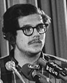 |
| Ted Gold |
| 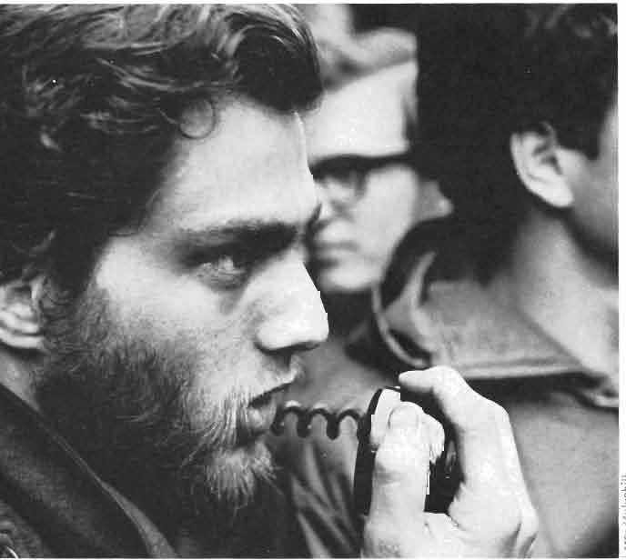 |
| John Jacobs (JJ) |
Fifty Years On and the Death of Morality
For most of us the Columbia strike of 1968 was about moral issues: the Vietnam War, racism at home, and Columbia's role in each. We were right, everybody else was wrong. 50 years later, everybody else is still wrong. The United States is indisputably the most destructive nation on earth since Nazi Germany. Morality is a forgotten concept; there are no moral leaders in this country. The USA is guilty of too many crimes to list here, but foremost among them is the endless killing of people and toppling of governments all over world to further "American interests".The last moral leader the USA knew was Martin Luther King. When he began to speak openly about the Vietnam war and of social and economic justice (right next door at Riverside Church just a year before the Columbia strike) he was killed. Since then nobody has stood up to take his place. In fact, every prominent leader who posed a serious threat to the Vietnam War was assassinated: JFK (when he tried to stop the war and make peace with the USSR and Cuba[24]), Malcolm X (the first Black leader to speak out against the war), MLK, and finally Robert Kennedy.
This country and the planet itself are spiraling into Armageddon. Can we stop it? The kinds of mass movements and open rebellion that made some difference in the 1960s don't happen any more, or if they do, they have no affect. American government at every level as well as the two-party system are utterly corrupt, the electoral system nonfunctional, the population torn by hatred, depression, despair, and addiction. Even if elections were fair, open, and honest, at least 40% of the electorate is openly racist. And of the other 60%, probably most feel threatened by "radical Islamic terrorism" and favor the wars, the security state, the drones, and all the rest. The best hope we had for meaningful change, Bernie Sanders' 2016 campaign, was squashed like a bug. Fifty years ago, I could never have predicted a world like this. In 1968 and the years that followed we tried to fix things and the world has been engulfed in the backlash — to 1968 as well as to the Civil Rights movement and FDR's New Deal — ever since. I don't know what else to say, except to recall what we were taught as children: Do unto others as you would have them do unto you. A simple rule, what became of it?
Chronology
23 April 1968 Assault on gym site, occupation of Hamilton Hall 24 April 1968 Occupation of Low Library 26-28 April 1968 Occupation of Math, Avery, Fayerweather 30 April 1968 712 building occupiers and bystanders arrested 6 May 1968 University reopened, students boycott classes 17 May 1968 117 arrested at 114th Street SRO 21 May 1968 138 arrested in "Hamilton II" + bystanders 4 June 1968 Counter-commencement on Low Plaza.
Legend
BPP Black Panther Party CORE Congress Of Racial Equality (then); Columbia Organization of Rising Entrepreneurs (now) IDA Institute for Defense Analyses PL (PLP) Progressive Labor Party ROTC Reserve Officers Training Corps SAS Students Afro-American Society SDS Students for a Democratic Society SNCC Student Nonviolent Coordinating Committee SRO Single Room Occupancy SWP Socialist Workers Party TPF Tactical Police Force WKCR The Columbia student-run radio station YAWF Youth Against War and Fascism YCL Young Communist League YSA Young Socialist Alliance
Notes
- Publication of the Columbia Librarian issue, Volume XXVII Numbers 1-2, was delayed until Fall-Winter 1999.
- Big demonstrations and other actions in 1967 persuaded Columbia's administration to stop turning over class rank lists to Selective Service, in defiance of US policy, if not law. Fast forward 35 years to when Columbia announced plans to send regular reports about each foreign student to the Immigration and Naturalization Service (not just residence and visa status but also detailed academic information) and not a peep was heard from anybody. In the intervening years Columbia had often refused to provide information such as students' reading preferences to the FBI as a matter of principle, even without student prodding.
- These things are not intrinsically bad; you have to take them in context. For example, see the 1940s section of my Computing at Columbia Timeline. It's one thing to fight Fascism and genocide (if that's what we were doing) but Viet Nam was something else again, and Columbia was tied to the Institute for Defense Analyses (IDA) which conducted classified war and weapons research for the Pentagon, e.g. on the "automated battlefield" and defoliation, from which the Vietnamese (not to mention American veterans and other field personnel) are still suffering today, as will be the case with depleted uranium and burn pits in Iraq and Afghanistan. Six weeks prior to the Columbia strike, a petition bearing nearly 2000 signatures calling on Columbia to cease classified war research was brought to the President's office; the University responded by placing the students who presented it on disciplinary probation.
- The Times managing editors were also Columbia Trustees.
- Press and photographers were allowed into the President's office the first day, when it was messy, and this was the only view the public had (most famously from the May 10th Life issue). The mainstream press was barred after that because of their fixation on silliness, like the student who was smoking the President's cigars, rather than the issues of the strike.
- In retrospect, perhaps the leather-clad police were not TPF after all, but a detachment of motorcycle police brought in temporarily until the TPF arrived.
- Nothing lasts forever. In 2005, academic computing was again severed from the Libraries and rejoined to administrative computing.
- The Young Lords.... My mind might be a little fuzzy about this because I read today (16 July 2009) in El Diaro that Summer 2009 is the 40th anniversary of the founding of the Young Lords, so it would seem they were not on campus (or, rather, like the Black Panthers, in front of the main gate on Broadway) in the prelude to the 1968 strike, at least not formally. (The article is Reflexiones sobre 40 años de los Young Lords by Iris Morales, one the founders. By the way, I recommend that everybody who cares about reading world and local news that has not been censored and sanitized by the corporate media, and that treats Latin America and its new progressive governments with respect instead of dirision, learn Spanish; you'll be surprised and amazed. Print journalism is not dead, just the anglo version.) (Update June 2014: El Diario was just snapped up by a group that characterized it as a “ghetto newspaper” that needed to “elevate its standards and pursue more highly educated readers”.)
References
- Bingham, Clara, 'Voices of a Revolution —
“The Whole World Is Watching”: An Oral History of the 1968 Columbia
Uprising', Vanity Fair, April 2018, pp.118-127,130-131.
- Naison, Mark D.,
White
Boy: A Memoir
Temple University Press, Philadelphia (2002). This book includes the most
vivid, accurate, and honest account of the Columbia scene in the 1960s that I
have encountered. By focusing on the painful racial issues behind the events
of 1968, it shows not just what happened, but why, and it captures the
passions, stresses, sights, sounds, and smells of that time and place like
nothing else I've read.
- Who Rules
Columbia?, North American Congress on Latin America, 475
Riverside Drive, NYC (1970). "If you depended on major media,
all you knew about Columbia University in 1968 was that Mark Rudd, SDS, and
some long-haired students became spontaneously restless. In fact, a major
study of Columbia's role in the community and in the world was produced by
these students. This is NACLA's reprint of the original 1968
edition. 'Strawberry Statement' is cute, but here's the beef."
(NameBase, A Cumulative Index
of Books and Clippings)
[Sorry, as of April 2018 this one comes up
blank; can't find it anywhere else.]
- Obenzinger, Hilton,
Busy
Dying - Columbia Revolt, Low Commune, April
1968, Chax Press (2008) [excerpt]
- Bradley, Stefan M., Harlem
vs. Columbia University: Black Student Power in the Late 1960s,
University of Illinois Press; 1st Edition (2009)
- McCaughey, Robert A.,
Stand,
Columbia: A History of Columbia University, Columbia University Press (2003),
esp. Chapter 15: "Riding the Whirlwind: Columbia '68".
- Rudd,
Mark, Underground:
My Life with SDS and the Weathermen, William Morrow (2010).
- Gilbert, Dave, SDS/WUO,
Students For A Democratic Society And The Weather Underground
Organization,
Abraham Guillen Press/Arm the Spirit (2002).
- Kurlansky, Mark,
1968:
The Year That Rocked the World,
Ballentine Books, New York (2004), esp. Chapters 11 and 20.
- Fugitive
Days and other books by Bill Ayers
- Cathy Wilkerson,
Flying
Close to the Sun: My Life and Times As a Weatherman,
Seven Stories Press (2007).
- Todd Gitlin, The
Sixties: Years of Hope, Days of Rage, Bantam (1993)
- Anderson, Terry H., The
Movement and The Sixties, Oxford University Press (1996)
- Judith Clavir Albert and Stewart Edward Albert,
The
Sixties Papers: Documents of a Rebellious Decade,
Praeger Paperback (1984).
- Susan Braudy, Family
Circle, Anchor (2004).
- Malcom X, The
Autobiography of Malcolm X: As Told to Alex Haley,
Ballantine Books (1987).
- George Jackson, Soledad
Brother: The Prison Letters of George Jackson,
Lawrence Hill Books (1994).
- Melville, Sam, Letters
From Attica
- The
Weather Underground (DVD)
- Tlatelolco
massacre, Wikipedia, accessed 10 August 2019.
- Poniatowska, Elena,
La noche de Tlatelolco: Testimonios de historia oral,
Ediciones Era, S.A. de C.V., México D.F., 1971, 1998. - Taibo, Paco, '68
(Siete Cuentos),
Seven Stories Press (2004).
- Carrier, Michael,
Fighting the War against Blight: Columbia University, Morningside
Heights, Inc., and Counterinsurgent Urban Renewal, Journal of
Planning History, 27 December 2010.
- Rosenberg, Roslind, 1968: Fifty Years Later, Barnard Magazine, Spring 1968.
- Douglass, James W., JFK and the Unspeakable: Why He Died and Why It Matters, A Touchstone Book, Simon & Schuster (2008).
Links (Verified April 2018 - defunct links removed)
- Dohrn, Bernadine,
“How the Anti-War Movement Won the Hearts and Minds of the Public”, In These Times, 11 September 2013. Not about Columbia 1968 exactly, but a glimmer of hope in these dark, depressing times from an ex-neighbor. - 1968:
Columbia in Crisis, a major online exhibit by Jocelyn Wilk of the
Columbia Archive, with a wealth of photos and documents (2011). Use the
menu on the left to see the different parts.
- Columbia
Daily Spectator issues, April 24 - May 8, 1968.
- Columbia
College Today, Spring 1968 issue, in some kind of “book
reader” format. 100 pages. Liable to disappear at any time. Paper
copies available in the Columbia Archive.
-
Columbia Forty Years After the Strike:
A Multiracial Community "Cleansed" of a Working Class Presence,
Mark Naison, Fordham University, 2008-04-25.
-
How High School Students Helped Save the
Columbia Strike - And Why the Gentrification of Manhattan Bodes Ill for
the Success of Future Protests,
Mark Naison, Fordham University, 2008-04-26.
-
30 April 1975,
Billy Kelly, Tuổi Trẻ,
2008-04-30.
- Third World Newsreel (TWN),
Columbia Revolt (1968, film, 50 minutes): [ Part I ] [ Part II ] [ From TWN ] [ Roz Payne's Newsreel Archives ]
(SEE SCREENSHOT GALLERY) I'm in it a lot, e.g. catching food on the Low Library ledge, occupying the Hamilton lobby. The scene of Teddy Gold and me sharing a gallon jug of apple juice has been cut from the film. The film is also included on a CD, Vintage 1950s-1960s New York City Film Collection, which can be ordered from Amazon.com. - Dohrn, Bernadine,
Letter to Young Activists: Beware Sixties Nostalgia,
Monthly Review: MR Zine, 27 July 2005. - "Bloody Minds",
1967 song about IDA written in Furnald Hall,
sung by Bob Feldman, Youtube video.
- Rudd, Mark,
His website. - Gillies, Kevin,
The Last Radical
Vancouver Magazine, November 1998. A retrospective of the life of "JJ", John Jacobs, who died in 1997. This article disappeared from their website some years ago and I had not had the sense to archive it locally. In June 2013, it was located and scanned by Jennifer Giesbrecht, Assistant Editor of Vancouver magazine, and sent to me for this site. The PDF is not OCR'd, just a visual scan, but it's perfectly readable if you magnify it. The accompanying photos can't be made out. If the original online text and photos can be located, they will be posted. (I have the text of "Part 1" HERE but without the pictures and of course the "Read more" link doesn't go anywhere, nor do any of the others.) Meanwhile, you can also read some things about JJ in Mark Rudd's website, and much more in this Wikipedia page.) - Christiane
Collins, Scholar Who Fought a Columbia Gym, Dies at 92,
New York Times, 8 May 2018.
- Branch, James "Plunky", Personal
Random Ramblings on My Columbia 1968 + 40 Weekend Experience,
Columbia1968.com, 2008.
- Hond, Paul, “Stir
it Up”,
Columbia Magazine,
Spring 2008: An article about Paul Cronin's forthcoming documentary film
about the student uprising at Columbia, tentatively scheduled for release in
2017. As of December 2013 Paul had conducted more than 400 filmed
interviews with participants and witnesses. He estimates the film will last
15 hours.
- “How
It All Began: Origins and History of the National Caucus of Labor Committees
in New York and Philadelphia (1966-1971)”, a detailed history of
some of the factions involved in the Columbia uprising, with special
attention to the role of the SDS Labor Committee, by an anonymous author
affiliated with this
group. Chapter 2
focuses on the Columbia strike.
- Karaganis, Joseph, "Radicalism
and research at Columbia: the legacy of '68", 21st Century 4.1
(Spring 1999), Columbia University.
- “Diego”
Mayo del 68, o cómo una revolución se quedó en nada, Junio del 2007. - Auerbach, Shane,
The Little Generation That Could, and Did,
Jul-Aug 2004 (PDF). - Columbiana
1968 Photo Gallery.
- Columbia
University protests of 1968, Columbia Wiki.
- Columbia
University protests of 1968, Wikipedia.
- David Cortright, Antiwar resistance within the military during the Vietnam war, vietnamfulldisclosure.org, accessed 15 March 2018. There was massive opposition to the war in the US Army, Navy, and Air Force. We knew this in the 1960s and 70s, I knew it myself as a recent veteran.
Translations of this page courtesy of...
| Language | Link | Date | Translator | Organization |
|---|---|---|---|---|
| German | Deutsch | 2020/02/27 | Marcel Kopper | GWriters |
| Norwegian | Norsk | 2022/05/27 | Rune | Toyota deler |
| Russian | Русский | 2022/02/08 | Leonid Popov / Леонид Попов | Pngflare.com |
[ Top ]